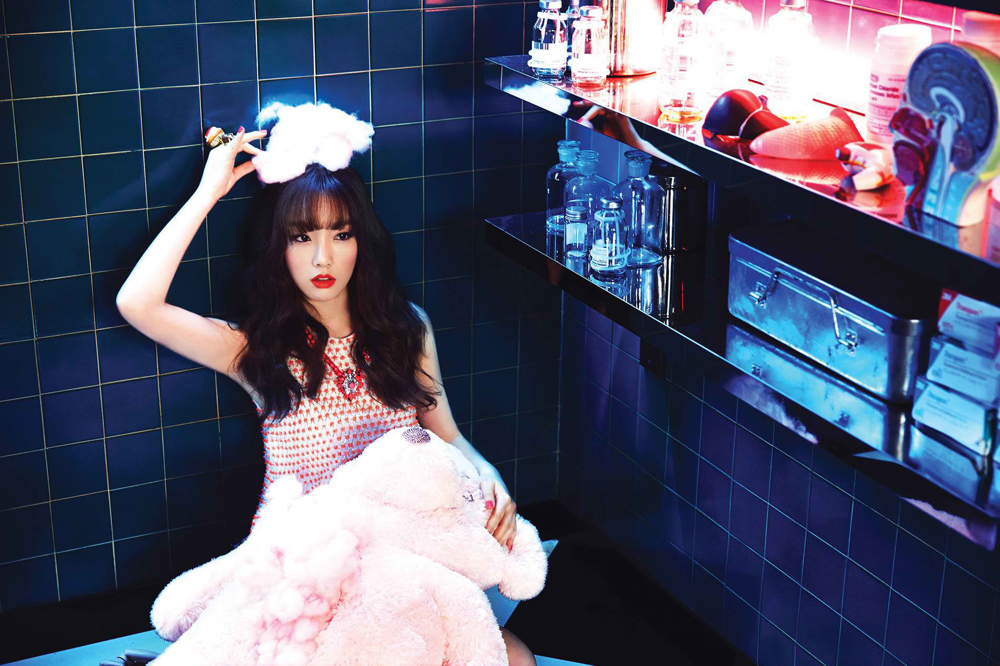

<!DOCTYPE html>
<html>
<head>

	<title></title>
	<link rel="stylesheet" type="text/css" href="memberStyle.css">

</head>
<body>

</body>
</html>

<div class="container">
	<div id="header">
		<font color="101010" size="60">0000000000000000000000</font>
		<a href="file:///home/eunice/Desktop/KIMBERLY OROZCO BSIS-2/index.html#section">MEMBERS</a><font color="101010">00</font>
		<a href=> SONGS</a><font color="101010">00</font>
		<a href=""> ALBUMS</a><font color="101010">00</font>
		<a href="">  ABOUT</a><font color="101010">0000</font>	
	</div>
	<br>
	<div id="member">
		<div id="section">
			<br>
		  	<div class="img">
			  <a target="_blank" href="taeyeon.html">
			 
			 </a>
			 </div>
				</div>
				<div id="name">Taeyeon</div><br><strong>
	
				Name: Kim Tae-yeon – Korean: 김태연<br>
				Birthday: March 9, 1989<br>
				Birthplace: Jeonju, North Jeolla, South Korea<br>
				Height: 157cm – Blood type: O</strong><br><br>

				DJ for Good Friend Radio (2008-2010)<br>
				Solo in If – drama OST for Hong Gil Dong (2008)<br>
				Solo in Can You Hear Me – drama OST for Beethoven Virus (2008)<br>
				Starred in variety show We Got Married with comedian Jeong Hyeong-don (2009)<br>
				Duet with Sunny in It’s Love – drama OST for Heading To The Ground (2009)<br>
				Co-host of variety talk show Win-Win (2010)<br>
				Starred in stage musical Midnight Sun (2010)<br>
				Voice-acting in animated film Despicable Me (2010) and Despicable Me 2 (2013)<br>
				Solo in I Love You – drama OST for Athena: Goddess of War (2010)<br>
				Duet with Kim Bum-soo in Different (2011)<br>
				Played a part in drama Salamander Guru (2012)<br>
				Co-host of MBC Music Core with Tiffany and Seohyun (2012-2013)<br>
				Member of sub-unit Girls’ Generation-TTS (since 2012, details further below)<br>
				Solo in Missing You Like Crazy – drama OST for The King 2 Hearts (2012)<br>
				Solo in Closer – drama OST for To The Beautiful You (2012)<br>
				Solo in Love, That One Word – drama OST for You’re All Surrounded (2014)<br>


	</div>
	<br>
	<div id="footer">
			Copyright &copy; 2016 girlsgeneration.com | Kimberly Orozco BSIS-2
	</div>

</div>